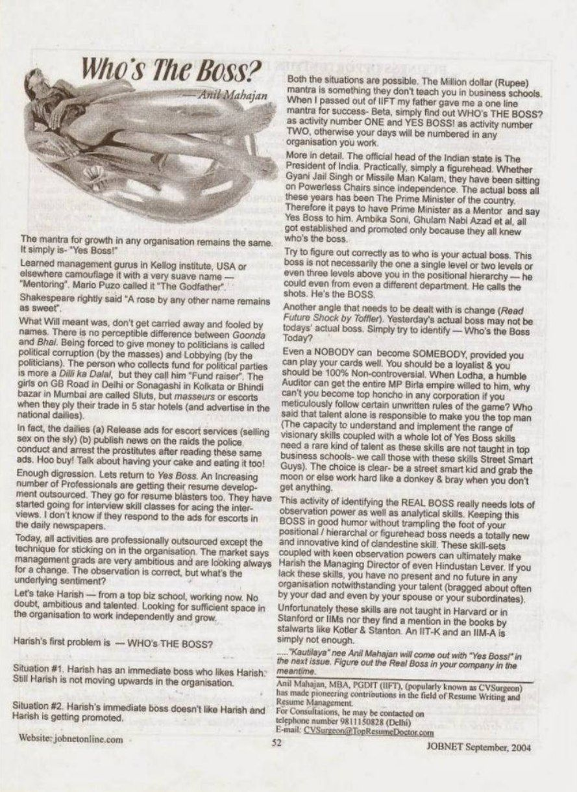

JOBNET Career Intelligence Archive
Leadership is not about position — it is about influence. Who truly influences decisions, drives performance and inspires people to achieve extraordinary results?
Overview
In this thought-provoking article, Anil Mahajane challenged one of the most common assumptions in the workplace — that authority alone makes someone a leader.
The article encouraged professionals to look beyond organisational titles and ask a deeper question: who truly influences decisions, drives performance and inspires people to achieve extraordinary results?
Long before concepts such as servant leadership, emotional intelligence and collaborative leadership became mainstream, this article highlighted that the most effective leaders earn respect through credibility, competence and trust — not merely through hierarchy.
Original Publication
Original published article — scanned archival page.

Who's The Boss? · JOBNET · September 2004
Article Transcript
Published in JOBNET
During the protectionist times of 45 years there was a short supply syndrome ruling the market. I remember my father booked a Bajaj scooter for me when I was 6 years old so that I would get it after a waiting period of 18 years — hopefully before my marriage. But with capitalism spreading itself under the garb of liberalisation, competition is taking strong roots. Every service, including political parties, has the tendency of becoming a commodity.
And it is imperative for a commodity to move up the value-added chain towards branding.
In the job market, the first brunt of liberalisation was borne by candidates. To outwit the competition, companies suddenly realised they need the best professionals to remain on top or sufficiently away from the bottom. Kumbhakarana awakened. The Biodata became dead. The Resume took over. Family background or royal lineage took a back seat. Skills suddenly were in demand.
For presentation style and effective copywriting, resume writers entered the market. Brand-building became important to job seekers too. Unfortunately, a plethora of obnoxious and purposeless websites on jobs started. Two-minute resumes entered the market and became passé. They created more problems than they solved. Money-making gimmicks and fly-by-night initiatives created a bitter taste in the job market.
Capitalism is ruthless and spells death to those who are not able to promote themselves. The internet has made competition tough for everybody. If you are a placement consultant you have the rest of the world to ward off. If you are a call centre company, the candidate is the interviewer too and you have to be appealing and attractive enough to cajole them to send their resume to you. Before the candidate sends their resume to you, it is you — the company — who has to prepare a corporate Business Resume with power words and publish it in leading newspapers or host it as a beautiful company website.
So cheer up, dear candidate — you are not alone in making a resume. When the company is spending so much of its time making a great resume to promote itself as the Best Employer, it is natural that you should get your resume prepared by an equally good copywriter as a great marketing tool.
A Business Resume can be aptly called a Portfolio. A portfolio lets you dazzle potential clients — prospective employers — with your capabilities and achievements by providing shining examples of your work.
A portfolio's contents depend on your industry, but may include examples of your work, references, testimonials, a client list, media or press clippings, awards and other evidence of your professional accomplishments. If you have great assets — flaunt them. Localise the places where you are well endowed and showcase them.
It is a relief that job seekers need one and only one kind of resume targeted at companies. Placement consultants need two different types of Business Resume — one for prospective client companies, and a second targeted at job seekers. Similarly, companies need more than three kinds of Business Resume: one targeted at job seekers, another targeted at prospective consumers, and one targeted at prospective investors or banks.
We have much to discuss on this issue. Watch out for the next issue — and we move on to catch the GateKeepers to companies, i.e., HRD people who are paid by the company to reject your resume.
Modern Context
The workplace has transformed significantly since this article was first published. Hierarchical organisations have given way to flatter structures, cross-functional teams, digital collaboration and global workforces. Leadership is no longer defined solely by reporting relationships.
Today's organisations expect leaders to:
Modern leadership is increasingly measured by influence rather than authority. Teams respond best to managers who coach, communicate and empower rather than simply direct.
Then & Now
Leadership is built through consistent actions rather than titles.
The most respected leaders create environments where others succeed.
Key Takeaways
Practical Advice
Whether or not you currently manage people:
In today's workplace, leadership begins long before a promotion. It is demonstrated through everyday decisions, professional integrity and a genuine commitment to helping individuals and organisations succeed.
Looking Ahead
The most effective leaders are not remembered because they held authority. They are remembered because they earned trust, developed people and created lasting organisational value.
Artificial Intelligence will automate many operational activities, but it cannot replace the human qualities that define exceptional leadership. Empathy, judgement, ethical decision-making, collaboration and the ability to inspire people will become even more valuable as organisations navigate increasingly complex business environments.
About the Author
Continue Exploring
This article concludes the original JOBNET Career Intelligence Archive (2003–2004).